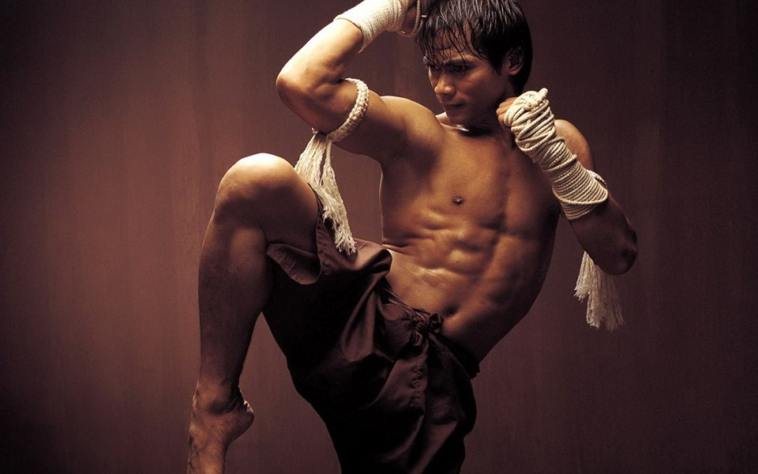
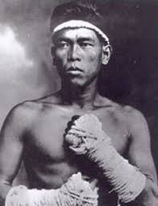
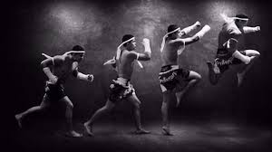

MUAY-THAI

Arte marcial de origen tailandés y cierta peligrosidad,
ya que emplea técnicas con potencial letal. Centrada en
el contacto directo cuerpo a cuerpo, esta disciplina
tiende a procurar una derrota rápida del rival con golpes
fuertes y poderosos. En esta disciplina se permite la
utilización de todas las extremidades y la mayor parte
del cuerpo.Es considerado un tipo de lucha extrema, y
es ilegal en algunos países.
Historia
El primer ejército tailandés se creó en 1238 en la ciudad norteña de Sukhothai para
proteger al gobierno y a los habitantes de la ciudad. El entrenamiento incluía el combate
cuerpo a cuerpo, el uso de armamento y la utilización del cuerpo como arma. El Muay Thai y
el Krabi Krabong evolucionaron a partir de este entrenamiento.

Los primeros campamentos de Muay Thai aparecieron debido a la constante amenaza de guerra
entre Tailandia, Birmania y Camboya. Los jóvenes practicaban el Muay Thai para defenderse,
ejercitarse y disciplinarse, creando grandes ejércitos para proteger al Reino de Tailandia.
Durante la Era del Rey Narai, el Muay Thai se convirtió en un deporte nacional. Se desarrollaron
tradiciones fundamentales que permanecerían durante los siguientes 400 años
Terminología
La palabra muay , que se traduce como "combate", "lucha" o "boxeo", proviene del sánscrito Mavya
que significa "unir". La palabra thai es el equivalente al gentilicio "tailandés", cuyo significado
es "persona libre" (semejante al significado del término "franco"). El término "muay thai" es traducido
al español frecuentemente como "boxeo tailandés" y al inglés como"thaiboxing".

- nak muay: practicante de muay thai
- nak muay farang: (luchador extranjero) usado para los peleadores occidentales.
- Kru Muay o solo Kru (maestro) entrenador.
- Wai Kru (Respeto hacia el maestro) Saludo tradicional
- Kai Muay (Campo para muay) Centro/gimnasio de entrenamiento